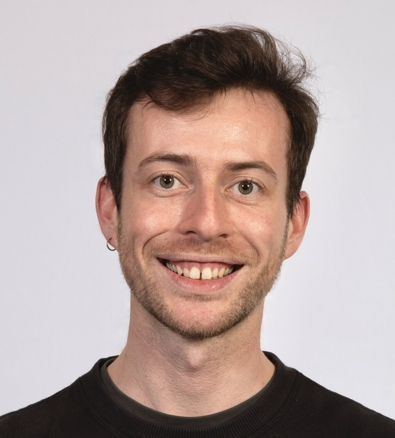

Clément Moreau
CNRS Researcher in Applied Mathematics

Welcome to my webpage!
Since January 2024, I am a CNRS researcher (Chargé de recherche CNRS) affiliated with the Laboratoire des Sciences du Numérique de Nantes.
My research revolves broadly around control theory and optimisation, mathematical modelling, fluid dynamics and microscopic swimming. Please find more details below, and contact me if you would like to chat!
A short bio:
From 2020 to 2023, I was working as a JSPS Postdoctoral Fellow at the RIMS in Kyoto University, hosted by Prof. Kenta Ishimoto.
I have obtained my PhD in June 2020. It took place both at Inria Sophia-Antipolis and Université Paris Dauphine-PSL, under the supervision of Laetitia Giraldi, Pierre Lissy and Jean-Baptiste Pomet.
During year 2016-2017, I was invited at University of York by Dr Hermes Gadêlha, who is now Senior Lecturer at University of Bristol (UK).
I am a former student at Ecole Normale Supérieure de Cachan (France).
For more details, here is my CV in English (updated Dec. 2023) and in French (updated Dec. 2023).
Research Interests
My research deals with mathematical control theory and optimization, and various applications in the fields of robophysics and biofluid mechanics, especially micro-swimming -- the motion of micro-organisms and micro-robots in a fluid.
Controllability, systems control
I am interested in control of nonlinear systems. In particular, I have worked on local controllability conditions for nonlinear control-affine systems in finite dimension, which usually involves to look at underlying Lie algebra structures. For both finite and infinite dimensional systems, I also take interest in the state-constrained controllability and sliding mode control.
Micro-swimming and control theory
I study the motion of swimming micro-organisms through modelling, controllability analysis and numerical simulations. I use the tools of control theory on various models to better understand, predict or influence related phenomena. In particular, I have worked on models of magnetically controlled elastic robots, and on control of particles with external fluid interactions.
Bio-inspired robotic locomotion of slender bodies
I develop models and numerical simulations to study the motion and dynamics of slender, flexible continuous structures in complex media (fluids, non-Newtonian fluids, granular media). One of my goals is to cast this class of complex dynamics as (infinite-dimensional) control systems.
Modelling and optimisation for fluid dynamics
I am broadly interested in fluid mechanics at low Reynolds number and fluid-structure interactions. I use various mathematical tools such as functional analysis, shape optimisation and multiscale analysis to investigate questions related to fluid dynamics, mostly at Stokes regime, with applications to micro-swimming, biofluids and robotics.
Publications
Preprints
- C. Moreau, K. Ishimoto, Y. Privat, Shapes optimising grand resistance tensor entries for a rigid body in a Stokes flow, submitted.
arXiv - K. Ishimoto, C. Moreau, J. Herault, Robust undulatory locomotion via neuromechanical adjustments in a dissipative medium, submitted.
arXiv
2024
- C. Moreau, B. J. Walker, R. N. Poon, D. Soto, D. I. Goldman, E. A. Gaffney, K. Y. Wan, Minimal design of a synthetic cilium, accepted in Physical Review Research.
- M. P. Dalwadi, C. Moreau, E. A. Gaffney, B. Walker, K. Ishimoto, Generalised Jeffery's equations for rapidly spinning particles. Part II: Helicoidal objects with chirality, Journal of Fluid Mechanics 979, no. A2.
DOI arXiv - M. P. Dalwadi, C. Moreau, E. A. Gaffney, K. Ishimoto, B. Walker, Generalised Jeffery's equations for rapidly spinning particles. Part I: Spheroids, Journal of Fluid Mechanics 979, no. A1.
DOI arXiv - L. Giraldi, P. Lissy, C. Moreau, J.-B. Pomet, A necessary condition for local controllability of systems with two scalar controls, ESAIM:COCV 30, no. 4.
DOI hal
2023
- K. Ishimoto, C. Moreau, K. Yasuda, Odd elastohydrodynamics: non-reciprocal living material in a viscous
fluid, Physical Review X Life 1, no.2, Oct 2023.
DOI - C. Moreau, Controllability and optimal control of microswimmers: theory and applications, Journal of the Physical Society of Japan 92, no 121005, Oct 2023.
DOI
2022
- B. J. Walker, K. Ishimoto, C. Moreau, E. A. Gaffney, M. P. Dalwadi, Emergent rheotaxis of shape-changing swimmers in Poiseuille flow, Journal of Fluid Mechanics 944, R2.
DOI - K. Ishimoto, C. Moreau, K. Yasuda, Self-organized swimming with odd elasticity, Physical Review E 105, no. 064603.
DOI - B. J. Walker, K. Ishimoto, E. A. Gaffney, C. Moreau, The control of particles in the Stokes limit, Journal of Fluid Mechanics 942, A1.
DOI - E. A. Gaffney, M. P. Dalwadi, C. Moreau, K. Ishimoto, B. J. Walker, Canonical orbits for planar microswimmers in shear flow, Physical Review Fluids 7, no. L022101.
arxiv - B. J. Walker, K. Ishimoto, E. A. Gaffney, C. Moreau, M. P. Dalwadi, The effects of rapid yawing on simple swimmer models and planar Jeffery orbits, Physical Review Fluids 7, no. 023101.
arxiv
2021
- C. Moreau, K. Ishimoto, Driving a microswimmer with wall-induced flow, Micromachines 12, no. 9:1025, 2021.
DOI. - C. Moreau, K. Ishimoto, E. A. Gaffney, B. J. Walker, Control and controllability of microswimmers by a shearing flow, Royal Society Open Science, 8:211141, 2021.
DOI - P. Lissy, C. Moreau, State-constrained controllability of linear reaction-diffusion systems, ESAIM:COCV 27, pp. 70-91, 2021.
DOI
2018-2020
- C. Moreau, Local controllability of a magnetized Purcell's swimmer, IEEE Control Systems Letters 3, pp. 637-642, 2019.
DOI hal - C. Moreau, L. Giraldi, H. Gadêlha, The asymptotic coarse-graining formulation of slender-rods, bio-filaments and flagella. J. R. Soc. Interface 15: 20180235, 2018.
DOI arxiv - L. Giraldi, P. Lissy, C. Moreau and J.-B. Pomet, Addendum to ''Local Controllability of the Two-Link Magneto-Elastic Micro-Swimmer'', IEEE Transactions on Automatic Control 63, 2303-2305, 2018.
DOI arxiv
PhD
My PhD thesis, entitled, Controllability in finite and infinite dimension and applications to life-inspired nonlinear systems , is available here. I was supervised by: Laetitia Giraldi, Pierre Lissy, and Jean-Baptiste Pomet.
Communications
Upcoming
- March 16-21, APS Global Summit, Anaheim, USA
Past
2024
- Oct 22-23, Workshop on bio- and bio-inspired locomotion of slender bodies across scales and fields, Nantes, France
- Oct 3-4, ReV Workshop, Le Croisic, France
- Sep 27, Computational Soft Matter Seminar, The University of Amsterdam, Amsterdam, Netherlands
- Sep 18-19, Workshop "Control, modelling and optimisation for physics", Nice, France
- Aug 25-31, ICTAM Congress, Daegu, South Korea
- Jun 25-28, Journées Math Bio Santé, Nantes, France
- May 27-31, Congrès d'Analyse Numérique, Le Bois-Plage-en-Ré, France
- May 17-18, IUTAM Symposium on Soft Robotics, Tokyo, Japan
- May 13, RIMS Fluid Dynamics Seminar, Kyoto University, Kyoto, Japan
- Apr 9-11, British Applied Math Colloquium, Newcastle, UK
- Feb 07, Snake locomotion workshop, MNHN, Paris, France
- Jan 31, Biological Filaments Workshop, University of Exeter, Exeter, UK
- Jan 25, ReV (Bio-inspired robotics) team seminar, LS2N, Nantes, France
2023
- Nov 20, Shape seminar, Tohoku University, Sendai, Japan
- Nov 08, Takeuchi Lab seminar, The University of Tokyo, Tokyo, Japan
- Nov 06, Seminar of the Department of Physics, Kyushu University, Fukuoka, Japan
- Oct 10, Seirin Group seminar, ASHBi, Kyoto University, Japan
- Aug 20-25, Internatinal Congress of Industrial and Applied Mathematics (ICIAM 2023), Tokyo, Japan (organiser of two minisymposia: Optimal control: methods and applications and Low-Reynolds number swimming: modelling, analysis and applications)
- Jul 03-07, Jacques-Louis Lions French-Spanish Summer School, Nice, France(poster presentation)
- Jun 26-30, Euromech Colloquium, Nice, France
- Jun 20-23, Workshop de l'ANR COSSEROOTS, La Londe-les-Maures, France
- May 11, Kobayashi Group seminar, The University of Tokyo, Tokyo
- Jan 13, Workshop "New Perspectives on Active Matter", Warwick University
- Jan 12, Physics Theory Group Seminar, Warwick University
2022
- Nov 22, Seminar of the Department of Mathematics, Politecnico di Torino
- Nov 17, Seminar of the CODEX team, LS2N, Nantes
- Nov 01, Seirin Group seminar, ASHBi, Kyoto University, Japan
- Sep 8-10, JSIAM annual meeting 2022, Hokkaido University, Sapporo
- Jul 11-14, World Congress of Biomechanics, Taipei, Taiwan (online participation)
- Jun 23, Groupe de travail Contrôle de l'IECL, Nancy
- Jun 13-17, CANUM, Evian-les-Bains, France
- Jun 06-09, ECCOMAS Congress 2022, Oslo, Norway
- Mar 31, Odd viscoelasticity Workshop, Dutch Institute for Emergent Phenomena, Amsterdam, Netherlands
- Mar 22, RIMS Fluid Dynamics Group seminar, Kyoto University
- Feb 03, RIMS Fluid Dynamics Group seminar, Kyoto University, Japan
- Jan 28-29, Active Matter Workshop 2022, Meiji University, Tokyo, Japan
2021
- Dec 21, Applied Maths Seminar, Kyoto University
- Dec 03, Séminaire du CRAN, Nancy (online)
- Nov 27, RIMS Fluid Dynamics Group seminar, Kyoto University
- Sep 07, Séminaire Equations aux Dérivées Partielles de l'IRMA, Strasbourg
- Jun 21-24, Biofluids Symposium, Kyoto University
- Mar 02, Séminaire Analyse, Phénomènes Stochastiques et Applications du LMBA (online)
- Feb 22, Seminar of the Yamamoto Group (Theoretical Modeling of Soft Matter and Living Systems), Transport Phenomena Lab., Department of Chemical Engineering, Kyoto University
- Feb 16, Séminaire de l'équipe Analyse Appliquée de l'I2M (online)
- Jan 22-23, Active Matter Workshop 2021 (online)
2020
- Dec 3-4, State-constrained controllability of linear reaction-diffusion systems, Congrès d'Analyse Numérique (CAN-J) 2020 (online)
- Jul 12-17, Local controllability of magnetized Purcell's swimmers, 21st IFAC World Congress (online)
- May 21, Controllability in finite and infinite dimension of life-inspired nonlinear systems, GTT du LJLL, Paris, France
- Feb 3-5, Local controllability of magnetized Purcell's swimmers (poster presentation), Research Workshop of the Israel Science Foundation on Micro-Swimmers and Soft Robotics, Haifa, Israel
2019
- Dec 11-13, Local controllability of a magnetized Purcell's swimmer, 58th Conference on Decision and Control (CDC), Nice, France
- Jul 8-12, Necessary Condition for Local Controllability, 2019 Equadiff Conference, Leiden, Netherlands
- May 20-24, Une condition nécessaire de contrôlabilité locale pour une classe particulière de systèmes à deux contrôles, Colloque Inter'Actions, Bordeaux, France
- May 13-17, Une condition nécessaire de contrôlabilité locale pour une classe particulière de systèmes à deux contrôles, Congrès SMAI, Guidel, France
2018
- Dec 6-8, Necessary Condition for Local Controllability, 13th International Young Researchers Workshop on Geometry, Mechanics and Control, Coimbra, Portugal
- May 28 - June 01, Hydrodynamics of elastic micro-filaments: model comparison and applications (poster presentation), Congrès National d'Analyse Numérique (CANUM), Cap d'Agde, France
- Apr 12, Contrôlabilité d'un micro-nageur magnétique à deux segments, Journée des thèses de l'équipe EDPAN, LJAD, Nice, France
- Jan 22-24, Controllability of a Magneto-Elastic Micro-Swimmer, 12th International Young Researchers Workshop on Geometry, Mechanics and Control, Padova, Italy
2017
- Nov 13-14, Controllability of a Magneto-Elastic Micro-Swimmer, PGMO Days 2017, EDF Lab Paris-Saclay, France
Teaching
2022-2025
- Invited lecturer (4h) on "Mathematical approaches to micro-swimming" for the Mathematics module of the Cell Physics Master "Analyse 3" at Université de Strasbourg.
Below is the teaching I did while I was a PhD student.
2019-2020
- TD "Analyse 3" at Université Paris-Dauphine (2nd-year Mathematics and Economics uncergrad). Teacher: Jacques Féjoz
- Mini-course: "An easy-to-use fluid-structure simulator for active/passive rods/filaments" for graduate students of the Department of Engineering Mathematics at University of Bristol
2018-2019
- TD "Statistiques" at ISEM Nice (1st-year Economics undergrad).
- TD "Statistiques descriptives" at Université de Nice-Sophia Antipolis (2nd-year Mathematics and Computer Science undergrad). Teacher: Roland Masson
2017-2018
- TD "Mathématiques 2" at ISEM Nice (1st-year Economics undergrad). Teacher: Claire Chavaudret
Miscellaneous
Our paper Odd elastohydrodynamics: non-reciprocal living material in a viscous fluid catched the attention of the media! The story in New Scientist magazine was the most read in 2023 in the physics category and the headline made the cover.
I was representing the PhD students at the CEREMADE lab council from November 2019 to September 2020. I was also part of the CEREMADE's "Comité parité" from March 2019 to September 2020.
Since October 2018, I am a writer for the press review section of the Images des Mathématiques website.
I participated to the JSPS Science Dialogue program by giving lectures in English to Japanese high school students (in Nagoya on February 9th, 2021, in Obama on January 31st, 2023; next time in Kobe in November 2023!).
In March 2018, I was invited to talk about my research in four minutes in the show "La Méthode Scientifique" on the France Culture radio channel. The podcast is available here.
Contact
Address
Office n° 402 - Building SLS2N - Laboratoire des Sciences du Numérique de Nantes
Ecole Centrale de Nantes
1 rue de la Noë, 44321 Nantes Cedex 3
(or sometimes here:)
Office n° B120
IMT Atlantique
4 rue Alfred Kastler, 44300 Nantes